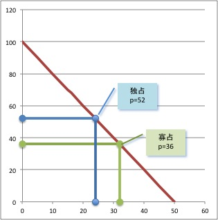

経済学で出る数学
ワークブックでじっくり攻める：問2.10解答例
【解答 2.10】
企業$1$の利潤${\pi}_1(x_1,x_2)$は
\begin{align*}
{\pi}_1(x_1,x_2)&=px_1-c_1\\[2mm]
&=(100-2(x_1+x_2))x_1-4x_1\\[2mm]
&=x_1(96-2x_1-2x_2).
\end{align*}
横軸切片は$x_1=0, 48-x_2$なので最適反応関数は
\[
R_1(x_2)=\frac{48-x_2}{2}
\]
企業$2$の利潤${\pi}_2(x_1,x_2)$は
\begin{align*}
{\pi}_2(x_1,x_2)&=px_2-c_2\\[2mm]
&=(100-2(x_1+x_2))x_2-4x_2\\[2mm]
&=x_2(96-2x_1-2x_2).
\end{align*}
横軸切片は$x_2=0, 48-x_1$なので最適反応関数は
\[
R_2(x_1)=\frac{48-x_1}{2}
\]
連立方程式
\[
\left\{
\begin{array}{c@{\;}c@{\;}l}
x_1&=&\displaystyle R_1(x_2)=\frac{48-x_2}{2}\\[2mm]
x_2&=&\displaystyle R_2(x_1)=\frac{48-x_1}{2}
\end{array}
\right.
\]
から，$x_1=16, x_2=16$となる．また${\pi}_1(16,16)=16\times (96-2\times 16-2\times 16)=512$ ．$p=100-2(16+16)=36$である．
【問 2.10終わり】
【メモ】
企業1の独占のケースを考えてみよう．企業1の利潤は，
\begin{align*}
{\pi}_1(x_1)&=px_1-c_1\\[2mm]
&=(100-2x_1)x_1-4x_1\\[2mm]
&=x_1(96-2x_1).
\end{align*}
横軸切片は$x_1=0,48$ なので，中点（頂点の$x_1$座標）の $24$ が最適生産量．このとき，${\pi}_1(24)=24\times (96-2\times 24)=1152$ ．$p=100-2\times 24=52$である．
寡占のケースが価格は低く，生産量が多いことがわかる．
独占と複占の場合を比較して表にまとめる．
\[
\begin{array}{|c|c|c|c|c|c|}
\hline
& 総生産量 & 価格 & 総利潤 & 消費者余剰 & 総余剰\\\hline
独占 & 24 & 52 & 1152 & 676 & 1828\\\hline
複占 & 32 & 36 & 1024 & 1024 & 2048\\\hline
\end{array}
\]

【メモ終わり】
解答例一覧へ